제1장. 서론
1.1 연구배경
전 세계적으로 헌혈 기반 혈액 공급 시스템이 구조적 한계에 직면하고 있다. WHO는 2023년 보고서에서 안전한 혈액 공급의 지속 가능성이 저하되고있다고 경고했으며, 주요 선진국들의 헌혈율은 지속적으로 감소 추세다. 국내의 경우 2024년 기준 하루 혈액 필요량 5,482유닛 대비 실제 공급량은 5,407 유닛(91.4%)에 그쳐 1일분 미만의 재고만을 유지하고 있다. 특히 혈소판 제제는 적혈구 제제의 5일분 재고 대비 단 1.8일분만 보유하여 상시적으로 주의· 경계 단계에 놓여 있다. 이러한 공급 부족의 근본 원인은 헌혈 인구의 급격한감소다. 2024년 국내 헌혈 참여율은 5.58%에 불과하며, 10대 헌혈자는 2015년약 150만 명에서 2024년 약 78만 명으로 47.5% 급감했다.
<그림1: 국내 헌혈 감소 추이 및 혈소판 제제 보유 현황(출처: 대한적십자사)>
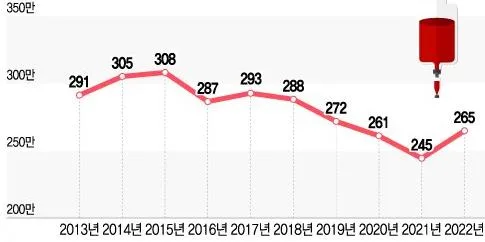
부족한 혈소판 확보를 위해 지정헌혈이 2018~2021년 7.3배 급증했으며, 팩당 200만 원 상당의 불법 매혈 시장까지 형성되는 사회 문제를 야기 중이다.
<그림2: 일반 지정현혈 현황 및 혈소판 성분 헌혈 현황(출처: 보건복지부)>
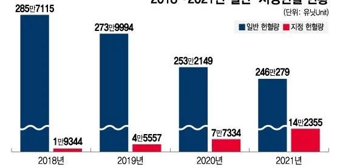
반면 혈액시장은 빠르게 성장 중이다. 글로벌 혈소판 시장은 연평균 약 4.2%로 전체 혈액 시장(3.4%)보다 빠르게 성장 중이며, 혈소판감소증이 전체
시장의 44.3%를 차지한다. 항암 치료 환자의 25%가 중증 혈소판 감소를 경험하는 등 만성적 수혈 수요가 시장을 견인하고 있다. 재생의료 분야에서도 FBS(소태아혈청)를 대체하는 HPL(인간혈소판용해물) 시장이 2024년 5억 달러에서 2034년 19억 달러로 연평균 15.4% 성장이 예상된다.
<그림3: 글로벌 혈액 시장 규모 추세(출처: 본인작성)>
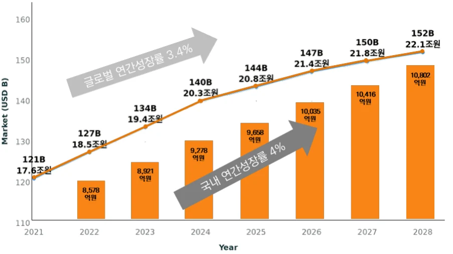
이러한 공급 위기에 대응하기 위해 줄기세포 기반 인공혈소판(iPSC-derived Platelets) 기술이 차세대 대안으로 부상하고 있다. 인공혈소판은 유도만능줄기세포(iPSC)를 거핵세포로 분화시켜 혈소판을 대량 생산하는 기술로, 헌혈 의존도를 낮추고 안정적 공급을 가능하게 한다. iPSC는 2006년 일본 교토대학의야마나카 신야 교수가 개발한 기술로, 2012년 노벨 생리의학상을 수상하며 재생의료의 핵심 기술로 자리 잡았다.
정부도 이러한 위기에 적극 대응하고 있다. 2022년 과학기술정보통신부는첨단바이오를 12대 국가전략기술 중 하나로 지정했으며, 2023년 7월에는 과기부·복지부·산업부·식약처가 공동으로 '세포기반 인공혈액 제조 및 실증 플랫폼개발사업'을 출범시켰다. 이 사업은 2023~2029년까지 7년간 총 425억 원(정부 300억 원, 민간 125억 원)을 투입하는 대형 국책과제다. 식약처는 2025년 8월세포기반 인공혈액을 첨단바이오의약품으로 공식 분류하고 조건부 허가 제도등 규제 패스트트랙을 마련했다.
1.2 연구주제 및 Research Question
그러나 인공혈소판 산업은 여전히 경제성 있는 대량생산(Scale-up)이라는 결정적 난제에 직면해 있다. 실험실 수준에서 소량의 고품질 혈소판을 생산하는것과 상업적 규모로 대량 생산하는 것 사이에는 기술적으로 매우 큰 간극이존재한다. 글로벌 선발주자인 일본 메가카리온(Megakaryon)의 사례가 이를 보여준다. 메가카리온은 2011년 설립되어 교토대학 iPS세포연구소(CiRA)의 기술을 기반으로 약 1,000억 원 이상을 투자받았으며, 2019년 세계 최초로 인공혈소판 임상 1상에 진입하여 안전성을 입증했다. 그러나 특수 배양기 중심 공정이 스케일업 단계에서의 효율 저하로 상업화 난관에 봉착했다. 결국 다년간의 R&D에도 불구하고 공정 재설계에 돌입했다.
또한 바이오·헬스케어 산업은 기술 개발 기간이 길고(평균 10~15년), 임상시험 비용이 막대하며, 규제 불확실성이 높아 초기 스타트업이 최종 제품 출시전에 자금이 고갈되는 Death Valley 현상이 빈번하다. 경쟁 업체들의 경우 다년간 단일 제품(수혈용)에만 집중하다가 스케일업 실패로 중간 수익원 없이투자금 대부분을 소진했다. 이는 인공혈소판 개발의 현시점 병목이 기초 과학지식이 아니라 공정 과정(Process)의 혁신과 사업 모델의 설계임을 보여준다. 이러한 산업 환경 속에서 2021년 설립된 한국의 ㈜듀셀(DewCell)은 주목할만한 성과를 보이고 있다. 듀셀은 후발주자로 진입하였음에도 창업 4년 만에경쟁사 대비 2.7배 높은 생산 수율을 달성하고, 세계 최초로 50L 규모 인공혈소판 배양에 도전하고 있다.
특히, 듀셀은 경쟁사가 해결하지 못한 스케일업 문제를 빠르게 돌파하고 있으며, 생산 수율은 2.7배, 공정 기간은 1/3로 단축하는 등 압도적인 기술 효율성을 보이고 있다. 더 나아가 단일 플랫폼 기술을 3개 시장(바이오 소재·골관절염 치료제·수혈용)으로 다각화하여 2026년부터 조기 수익화를 목표로 하고있다. 이러한 듀셀의 성장은 장기간 R&D와 막대한 자본이 필요하며, 규제 불확실성으로 인해 후발주자 추격이 어려운 바이오·헬스케어 산업의 특성을 고려하였을 때, 독특한 사례(Unusual Case)로 볼 수 있다.
따라서 이번 사례 연구를 통해 바이오·딥테크 분야로 진출을 희망하는 후발주자 스타트업이 나아갈 방향 및 전략에 대해 시사점을 제공하고자 다음과 같이 연구를 위한 Research Question을 도출하였다.
RQ1. 듀셀의 성장을 가속화한 핵심 전략 및 요인은 무엇인가? RQ2. 듀셀의 성장 메커니즘이 산업 후발주자들에게 주는 시사점은 무엇인가?
제2장. 이론적 배경
2.1 인공혈소판 산업 분석
2.1.1 인공혈소판 기술 분석
인공혈소판 기술은 유도만능줄기세포(iPSC)를 기반으로 한다. iPSC는 성인체세포를 역분화시켜 배아줄기세포와 동일한 만능성과 무한 증식 능력을 부여한 세포로, 2006년 일본 교토대학의 야마나카 교수가 개발해 2012년 노벨 생리의학상을 수상했다. iPSC의 핵심 특성은 두 가지다.
첫째, 만능성(Pluripotency)으로 신체의 거의 모든 세포 유형으로 분화 가능하다. 둘째, 무한 증식(Self-Renewal)으로 실험실 환경에서 이론적으로 무한히증식할 수 있어 마스터 셀 뱅크(MCB) 구축이 가능하며, 이는 상업적 대량생산의 필수 전제 조건이다.
<그림4: iPSC 생성 및 인공혈소판 분화 과정(출처: 듀셀)>
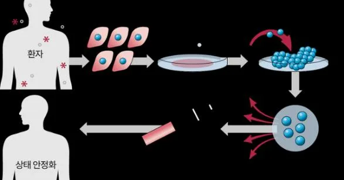
인공혈소판 생산 공정은 크게 세 단계로 구성된다. Upstream(상류 공정)은 iPSC를 조혈모세포(HSC)와 거핵전구세포(MKp)를 거쳐 거핵세포(MK)로 분화시
키는 단계다. 적절한 사이토카인 조합(TPO, SCF, IL-11 등)과 배양 조건을 설정하여 세포가 원하는 방향으로 분화하도록 유도한다. Midstream(중류 공정)은거핵세포를 바이오리액터에서 대량 배양하고 혈소판을 방출시키는 단계다. 바이오리액터는 온도, pH, 산소 농도, 교반 속도 등을 정밀 제어할 수 있는 세포배양 장비로, 소규모 실험실 수준에서 상업적 생산 규모(수십~수백 L)로 확장 (Scale-up)하는 핵심 설비다. Downstream(하류 공정)은 배양액에서 혈소판을분리·정제하고 품질을 관리하는 단계다. 원심분리, 여과, 크로마토그래피 등의기법을 조합하여 순도를 높이며, 최종 제품은 표면 마커(CD41a, CD42b 등) 발현율, 크기 분포, 기능성(응집능, 지혈 활성) 등의 품질 지표를 만족해야 한다. 인공혈소판 기술의 핵심 난제는 경제성 있는 대량생산(Scale-up)이다. 실험실 규모에서는 소량의 고품질 혈소판을 생산할 수 있으나, 상업적 규모로 확장하면 여러 기술적 장벽이 발생한다. 첫째, 배양기 크기가 커질수록 내부 환경의 균일성 유지가 어렵다. 10L 바이오리액터에서는 교반 속도를 높여야 산소가 골고루 전달되지만, 과도한 교반은 거핵세포에 물리적 손상을 주어 혈소판 방출 효율을 떨어뜨린다. 둘째, 세포 밀도가 높아지면 대사 부산물(lactate, ammonia 등)이 축적되어 세포 성장을 저해한다. 셋째, 생산 원가 문제다. 인공혈소판의 제조원가는 세포 배양 배지, 사이토카인, GMP 시설 운영비 등으로구성되며, 특히 사이토카인은 그램당 수백만 원에 달해 원가의 상당 부분을차지한다.
안전성 측면에서도 해결해야 할 과제들이 있다. iPSC는 만능성을 유지하기위해 유전자 조작을 거치는데, 이 과정에서 발암 유전자(c-Myc 등)가 사용되면 종양 원성(tumorigenicity) 위험이 제기된다. 일부 선발주자들은 거핵세포의증식력을 높이기 위해 c-MYC, BMI1, BCL-XL 등 발암 관련 유전자를 추가로주입하는 불멸화(immortalization) 전략을 택했으나, 이는 장기 안전성 검증 부담을 가중시킨다. 따라서 유전자 조작을 최소화하거나 하지 않는(Non- engineered) 접근법이 규제 승인 측면에서 유리하다.
2.1.2 인공혈소판 시장 분석
글로벌 혈액 시장은 2021년 121억 달러에서 2028년 152억 달러로 연평균약 3.4% 성장할 것으로 예상되며, 이 중 혈소판 시장은 연평균 약 4.2%로 더빠르게 성장하고 있다. 혈소판 시장의 빠른 성장은 수요와 공급 양면의 요인으로 설명된다.
수요 측면에서 가장 큰 시장은 혈소판감소증(Thrombocytopenia) 치료다. 혈소판감소증은 혈액 내 혈소판 수가 정상(150,000~450,000/μL) 이하로 감소하는 상태로, 주요 원인은 항암 화학요법, 방사선 치료, 골수 질환 등이다. 특히항암 치료 환자는 화학요법으로 인해 골수 기능이 억제되어 혈소판이 급격히감소하며, 반복적인 혈소판 수혈이 필요하다. 미국 국립암연구소(NCI) 데이터에 따르면 미국에서만 항암 치료 환자의 25%가 중증 혈소판 감소를 경험한다. 국내의 경우 2023년 암 보유 인구는 약 273만 명이며 연간 신규 발병자는 30만 명대로, 이들 중 상당수가 화학요법을 받으면서 혈소판 수혈이 필요한 잠재 시장을 형성한다. 이러한 만성적이고 반복적인 수혈 수요가 혈소판시장의 44.3%를 차지하며 시장 성장을 견인하고 있다.
재생의료(Regenerative Medicine) 시장도 인공혈소판의 중요한 응용 분야다. 세포치료제 연구가 활성화되면서 세포 배양에 필요한 성장인자(growth factor) 수요가 급증하고 있다. 전통적으로 세포 배양에는 FBS(Fetal Bovine Serum, 소태아혈청)가 사용되었으나, FBS는 공급 불안정성, 배치 간 품질 편차, 윤리적문제, 이종 병원체 오염 위험 등의 한계를 가진다. 이를 대체하기 위해 HPL(Human Platelet Lysate, 인간혈소판용해물)이 주목받고 있으며, HPL 시장은 2024년 5억 달러에서 2034년 19억 달러로 연평균 15.4%의 고성장이 예상된다. 그러나 기존 HPL은 헌혈 유래 혈소판을 사용하므로 공급 불안정성과 품질편차 문제를 여전히 안고 있다. 인공혈소판 기반 용해물(artificial HPL)은 이러한 문제를 해결하고 표준화된 고품질 제품을 안정적으로 공급할 수 있는 대안으로 부상하고 있다.
골관절염(Osteoarthritis) 치료 시장 또한 잠재 시장으로 분류된다. 현재 골관절염 치료에는 PRP(Platelet-Rich Plasma, 혈소판풍부혈장) 주사가 사용되는데, 환자 본인의 혈액에서 혈소판을 농축하여 관절에 주입하는 방식이다. PRP 내성장인자들이 연골 재생과 염증 완화를 돕는 것으로 알려져 있으나, 환자의건강 상태, 나이, 제조 방법에 따라 혈소판 품질 및 성장인자 농도가 차이를보이는 품질 불균일성이 근본적 한계로 지적된다. 인공혈소판은 표준화된 고농도 성장인자를 함유하여 PRP의 품질 불균일성 문제를 해결할 수 있다.
국내 혈액 시장은 2023년 기준 총 8,921억 원 규모로, 전년 대비 약 4% 성장했다. 이 중 혈액분획제제(알부민 등)가 4,863억 원, 혈액성분제제(적혈구·혈소판 등)가 4,058억 원을 차지한다. 국내 시장은 고령화로 인한 의료 수요 증가와 암 환자 증가에 기인해 지속 성장이 예상되며, 인공혈소판이 상용화되면국내에서만 수천억 원 규모의 시장을 형성할 것으로 전망된다.
2.1.3 인공혈소판 산업 가치사슬 분석
인공혈소판 산업의 가치사슬은 연구개발(R&D), 생산(Manufacturing), 유통· 판매(Distribution & Sales), 임상·규제(Clinical & Regulatory)의 단계로 구성된다. 연구개발(R&D) 단계는 iPSC 수립, 분화 프로토콜 개발, 공정 최적화, 품질분석 등을 포함한다. 이 단계에서는 대학이나 연구소와의 협력이 중요하며, 기초 연구 성과를 사업화 가능한 공정 기술로 전환하는 능력이 핵심이다. R&D 단계의 핵심 성과물은 특허와 노하우다. 특히 공정 특허는 제품 특허보다 우회하기 어려워 장기적 경쟁우위를 제공한다.
생산(Manufacturing) 단계는 GMP 시설에서 실제 제품을 대량 생산하는 단계다. 막대한 자본 투자가 필요하므로 초기 스타트업은 CDMO(Contract Development and Manufacturing Organization)를 활용하는 것이 일반적이다. 생산 단계의 핵심은 수율(yield), 순도(purity), 일관성(consistency)을 확보하면서도 원가를 낮추는 것이다.
유통·판매(Distribution & Sales) 단계는 제품을 고객에게 전달하는 단계다. 인공혈소판은 크게 세 가지 판매 채널을 가진다. 첫째, 병원·혈액원에 수혈용제제를 공급하는 B2B 모델이다. 둘째, 제약·바이오 기업에 연구용 소재(aHPL) 를 공급하는 B2B 모델이다. 셋째, 병원에 재생의료 치료제를 공급하는 B2B2C 모델이다.
임상·규제(Clinical & Regulatory) 단계는 제품의 안전성과 유효성을 입증하고허가를 받는 단계다. 세포치료제는 첨단바이오의약품으로 분류되며, 임상 1상 (안전성), 2상(용량 결정 및 초기 유효성), 3상(대규모 유효성 검증)을 거쳐야한다. 인공혈소판은 세계 최초 제품이므로 기존 가이드라인이 없어, 규제 기관과의 사전 협의가 매우 중요하다.
<그림5: 인공혈소판 산업 가치사슬(출처: 본인작성)>
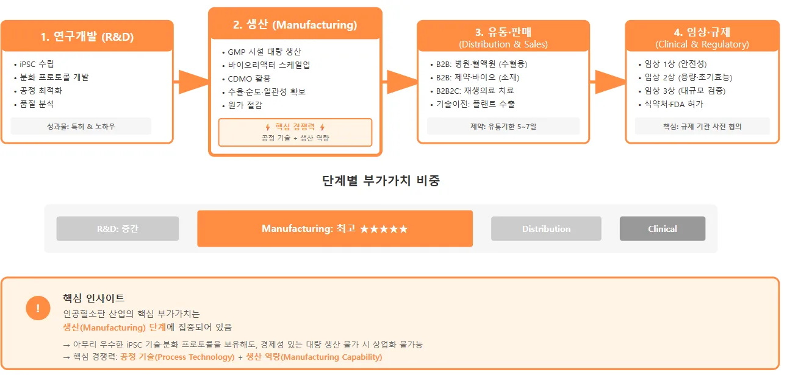
가치사슬 관점에서 볼 때, 인공혈소판 산업의 핵심 부가가치는 생산 (Manufacturing) 단계에 집중되어 있다. 아무리 우수한 iPSC 기술이나 분화 프로토콜을 보유해도, 이를 경제성 있게 대량 생산하지 못하면 상업화가 불가능하다. 따라서 인공혈소판 기업의 핵심 경쟁력은 공정 기술(Process Technology)과 생산 역량(Manufacturing Capability)에 있으며, 이를 보호하는공정 특허와 영업비밀(Trade Secret)이 가장 중요한 자산이다.
2.2 혁신이론 프레임워크
2.2.1 Core Competency (핵심역량)
Core Competency 개념은 Prahalad와 Hamel(1990)이 제시한 것으로, 조직내에서 다양한 기술과 생산 노하우를 조율하고 통합하는 능력으로 정의된다.
핵심역량은 개별 제품이 아니라 조직 전반에 내재된 집합적 학습(collective learning)에서 비롯된다. 핵심역량이 되기 위한 세 가지 조건은 다음과 같다. 첫째, 고객 가치 제공(Customer Value)이다. 핵심역량은 최종 제품이나 서비스에서 고객이 인식하는 혜택에 불균형적으로 큰 기여를 해야 한다. 둘째, 경쟁사 차별화(Competitor Differentiation)다. 핵심역량은 경쟁사가 쉽게 모방할 수없어야 한다. 이는 여러 기술과 스킬이 유기적으로 결합된 시스템의 복잡성에서 비롯된다. 셋째, 확장 가능성(Extendability)이다. 핵심역량은 다양한 시장과제품으로 확장할 수 있어야 한다.
<그림6: Core Competency 개념 도식(출처: 본인작성)>
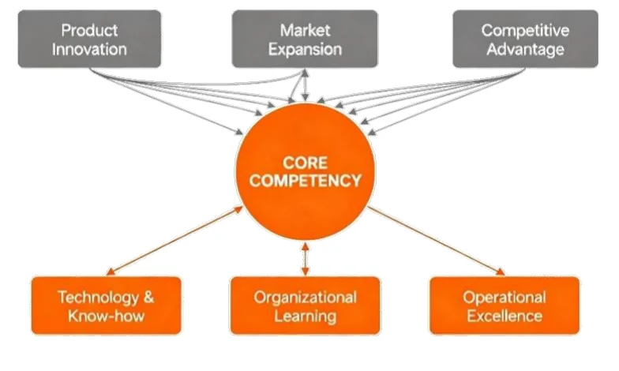
2.2.2 Dynamic Capabilities (동적역량)
Dynamic Capabilities 개념은 Teece, Pisano, Shuen(1997)이 제시한 것으로, 기업이 급변하는 환경에 대응하기 위해 내외부 역량을 통합·구축·재구성하는능력으로 정의된다. Teece(2007)는 동적역량을 세 단계 프로세스로 구체화했다. Sensing(감지)은 시장의 기회와 위협을 빠르게 포착하는 능력이다.
Seizing(포획)은 포착한 기회를 실제 사업화하기 위해 자원을 동원하고 투자결정을 내리는 능력이다. Transforming(변환)은 조직 구조, 프로세스, 자산을 새
로운 전략에 맞게 재구성하는 능력이다.
<그림7: Dynamic Capabilities 개념 도식(출처: 본인작성)>
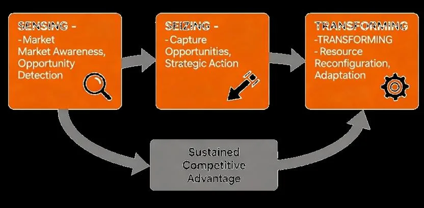
동적역량은 단순한 운영 역량(Operational Capability)과 구분된다. 운영 역량은 현재의 비즈니스를 효율적으로 수행하는 능력(예: 품질 관리, 원가 절감)인반면, 동적역량은 비즈니스 모델 자체를 변화시키는 고차원적 능력이다. 동적역량은 특히 기술 변화가 빠르고 시장 불확실성이 높은 산업에서 중요하다.
Teece는 이를 고속도(high-velocity) 시장으로 명명했으며, 바이오·IT·반도체 등이 대표적 예다.
2.2.3 Triple Helix (삼중나선 혁신 모델)
Triple Helix 모델은 Etzkowitz와 Leydesdorff(1995, 2000)가 제시한 혁신 생태계 이론으로, 혁신이 대학(University), 산업(Industry), 정부(Government)라는세 주체의 상호작용과 협력을 통해 창출된다고 주장한다. Triple Helix라는 명칭은 DNA의 이중나선 구조에서 영감을 받았으며, 세 주체가 서로 얽혀 돌아가며 혁신을 만들어낸다는 의미를 담고 있다.
전통적 혁신 모델에서는 각 주체의 역할이 명확히 구분되었다. 대학은 지식생산, 산업은 제품 생산, 정부는 규제와 지원이라는 단선적(Linear) 역할 분담이었다. 그러나 Triple Helix 모델은 이러한 경계가 허물어지고, 각 주체가 서로의 역할을 부분적으로 대체하거나 보완한다고 본다. 예를 들어 대학이 창업을통해 산업 활동에 직접 참여하고, 기업이 자체 연구소를 운영하며 지식 생산
에 기여하고, 정부가 직접 R&D 투자자로 나서는 등의 역할 중첩이 발생한다.
<그림8: Triple Helix 개념 도식(출처: 본인작성)>
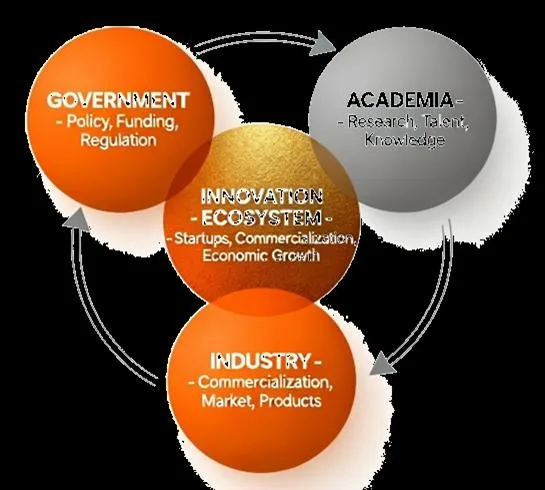
Triple Helix 모델의 핵심 메커니즘은 세 가지다. 역할 교차(Role Overlap)는각 주체가 전통적 역할을 넘어 다른 주체의 기능을 수행하는 것이다. 하이브리드 조직(Hybrid Organization)은 세 주체의 특성을 결합한 새로운 형태의 조직이다. 예를 들어 연구 컨소시엄, 산학협력단, 테크노파크 등이 이에 해당한다. 재귀적 네트워크(Recursive Network)는 세 주체 간 피드백 루프가 형성되어 학습과 혁신이 가속화되는 것이다.
바이오·헬스케어 산업은 Triple Helix가 특히 중요한 분야다. 기초 연구는 대학과 연구소에서, 제품 개발과 생산은 기업에서, 임상시험은 병원에서, 규제와자금 지원은 정부에서 담당하므로, 네 주체(산·학·연·병·정)의 긴밀한 협력이 필수적이다.
제3장. 연구 흐름
본 연구는 인공혈소판 산업에서 후발주자로 진입한 듀셀이 어떻게 선발주자를 추월하고 산업 내 선도적 위치를 형성할 수 있었는지를 규명하기 위한 단으로 극단적 또는 독특한 사례(Extreme or Unique Case)와 계시적 사례 (Revelatory Case)를 제시했다. 듀셀은 두 조건을 모두 충족한다. 후발주자가
선발주자보다 10년 늦게 시작했음에도 4년 만에 기술적으로 추월하고, 선발주자가 1,000억 원 이상을 투자한 반면 300억 원의 투자로 동등 이상의 성과를달성했다는 점에서 극단적 사례다. 또한 인공혈소판 산업은 매우 초기 단계로공개된 정보가 제한적이나, 듀셀은 IR 자료, 정부 과제 공개 자료 등을 통해상대적으로 많은 정보를 공개하고 있어 후발주자 혁신 전략의 실체를 관찰할수 있는 계시적 사례다.
본 연구의 분석 프레임워크는 세 가지 이론적 렌즈를 통합적으로 적용한다.
Core Competency(핵심역량) 이론은 듀셀이 어떻게 독자적인 생산 플랫폼을구축하여 경쟁사와 차별화된 기술적 우위를 확보했는지를 분석한다. Dynamic Capabilities(동적역량) 이론은 듀셀이 어떻게 단일 플랫폼 기술을 다각화된 사업 포트폴리오로 전환하여 조기 수익화와 리스크 분산을 동시에 달성했는지를설명한다. Triple Helix(삼중나선 혁신 모델) 이론은 듀셀이 어떻게 산·학·연·병·정생태계를 전략적으로 구축하여 규제와 인프라의 구조적 우위를 확보했는지를조명한다.
연구 자료는 2차 자료(Secondary Data)를 중심으로 수집했다. 주요 자료원은 듀셀의 IR 자료, 정부 과제 공고, 식약처 고시, 특허 문서, 학술 논문, 언론보도 등이며, 이러한 다양한 자료원을 활용하여 삼각검증(Triangulation)을 수행했다. 자료 분석은 패턴 매칭(Pattern Matching)과 설명 구축(Explanation Building) 기법을 활용했다. 듀셀의 혁신 전략에서 관찰된 패턴이 Core Competency, Dynamic Capabilities, Triple Helix 이론이 예측하는 패턴과 일치하는지를 분석했으며, 왜 듀셀이 성공할 수 있었는가에 대한 논리적 설명을도출했다.
연구의 타당성을 확보하기 위해 네 가지 기준을 고려했다. 구성 타당성 (Construct Validity)은 핵심역량을 공정 기술, 동적역량을 3-Track 포트폴리오, 생태계 구축을 산·학·연·병·정 파트너십으로 구체화하여 확보했다. 내적 타당성 (Internal Validity)은 시간 순서를 명확히 하고 대안 설명을 배제하여 강화했다. 외적 타당성(External Validity)은 통계적 일반화가 아닌 분석적 일반화 (Analytical Generalization)를 추구했다. 신뢰성(Reliability)은 자료 출처를 기록하고 분석 과정을 체계적으로 문서화하여 연구의 재현 가능성을 높였다.
<그림9: 듀셀 후발주자 혁신 사례 연구 흐름(출처: 본인작성>
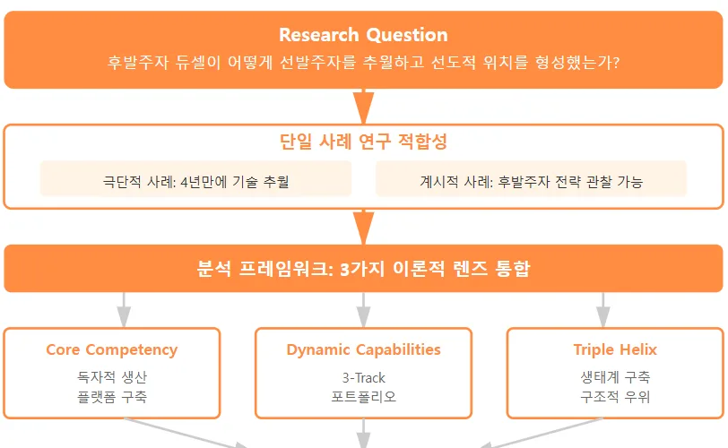
제4장. 듀셀 사례 분석
4.1 기업 개요 및 연혁
㈜듀셀(DewCell Inc.)은 2021년 10월 13일 설립된 국내 최초이자 유일한 인공혈소판 기반 바이오 벤처기업이다. 2025년 11월 기준 임직원 수는 24명이다. 듀셀은 설립 직후인 2021년 12월 벤처기업확인을 받았으며(혁신성장유형), 이는 정부 R&D 과제 지원, 세제 혜택, 인력 채용 등에서 중요한 자격 요건이되었다. 듀셀의 경영진은 산업 경험이 풍부한 전문가들로 구성되어 있다. 이는 R&D 중심의 연구자가 아닌, 상업화와 품질관리 경험이 풍부한 산업 전문가들이 주축이 되어 창업했다는 점에서 일반적인 바이오 스타트업과 차별화된다.
듀셀의 정부 과제 수주 현황을 살펴보면, 2022년 3월 TIPS 선정을 시작으로 2023년 4월 범부처 재생의료기술개발사업 및 소재부품기술개발사업, 2023년 7월 인공혈액사업단 주관기관 선정까지 누적 약 100억 원 이상의 정부 R&D 자금을 확보했다. 특히 2023년 7월 선정된 ‘세포기반 인공혈액 제조 및 실증플랫폼 개발사업’은 듀셀에게 전환점이 되었다. 이 사업은 다부처(과기부, 복지
부, 산업부, 식약처) 공동 사업으로, 2023~2029년까지 7년간 총 425억 원을투입하는 대형 국책과제다. 듀셀은 이 사업의 총괄 책임기관이 되어 부산대, 삼성서울병원, GC Cell 등 20여 개 기관을 아우르는 컨소시엄을 구성했다. 이는 듀셀이 단순한 참여 기업이 아니라 인공혈액 산업 생태계를 주도하는 허브 (Hub) 역할을 수행하게 되었음을 의미한다.
<그림10: 듀셀 기업 개요 및 연혁(출처: 듀셀 자료 참고, 본인작성)>
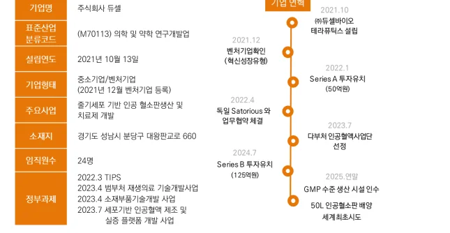
4.2 Core Competency: 공정 기술의 내재화
4.2.1 듀셀의 공정 혁신 전략
듀셀의 사업은 en-aPLT™(engineered artificial Platelet) 플랫폼에 기반한다. en-aPLT™는 "줄기세포 분화 유래 인공혈소판 제조 플랫폼"으로, iPSC를 출발점으로 하여 조혈모세포(HSC), 거핵전구세포(MKp), 거핵세포(MK)를 거쳐 최종적으로 인공혈소판을 대량 생산하는 전체 공정 체계를 의미한다. 이는 단순히세포 분화 프로토콜을 넘어, 바이오리액터 운영, 정제 기술, 품질 관리, GMP 생산까지를 포괄하는 통합 플랫폼이다.
<그림11: 듀셀의 en-aPLT™ 플랫폼 확장 도식(출처: 듀셀)>
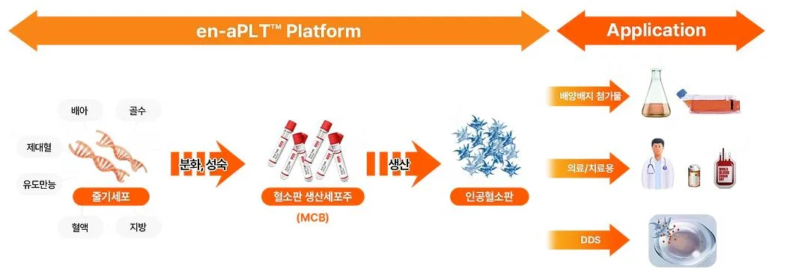
en-aPLT™ 플랫폼의 핵심 차별점은 세 가지 전략적 혁신으로 구성된다.
첫째, MKp-MCB(거핵전구세포 마스터셀뱅크) 전략이다. 기존 방식은 매번 iPSC에서부터 분화를 시작해야 했으나, 듀셀은 iPSC를 조혈모세포와 거핵전구세포까지 분화시킨 후 이를 냉동 보관한다. 필요할 때 MKp-MCB를 해동하여거기서부터 거핵세포로 분화시키고 혈소판을 생산하므로, 전체 공정 기간이 26일에서 9일로 단축된다. 이는 생산 회전율을 2.9배 높이고, 제조원가를 40~50% 절감하는 효과를 낳는다. MKp-MCB는 독자적 세포 선별 기술 (CD34+/CD41a+ 이중 양성 세포 최적화)로 구축되며, 이 기술은 특허로 보호된다.
<표1: 듀셀의 인공혈소판 기술 관련 특허 현황(출처: 듀셀 자료 참고, 본인작성)>
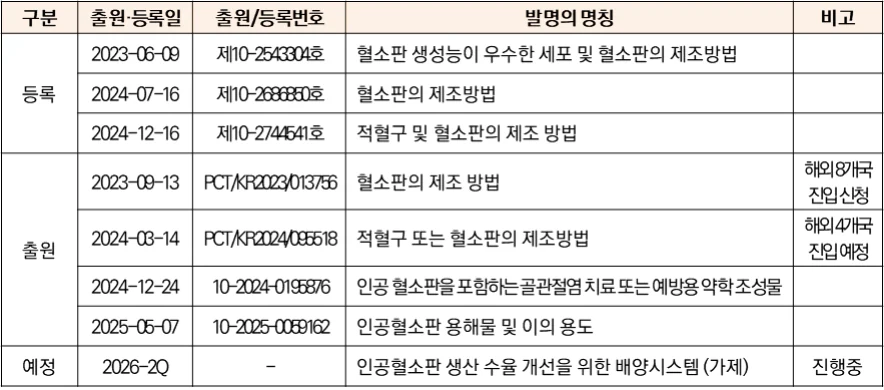
둘째, Non-engineered 안전성 전략이다. 듀셀은 유전자 조작을 최소화하고, 대신 고수율 세포 선별 기술로 생산성을 확보하는 전략을 택했다. 이는 식약
처와 FDA의 안전성 심사에서 유리하며, 임상시험 설계를 단순화한다. 2025년 8월 식약처가 세포기반 인공혈액을 첨단바이오의약품으로 공식 분류하면서, 듀셀의 Non-engineered 접근법은 조건부 허가 제도 적용이라는 규제 패스트트랙을 확보했다.
셋째 DoE 기반 공정 최적화와 범용 바이오리액터 활용이다. 듀셀은 글로벌표준인 Sartorius Biostat STR 시리즈를 사용한다. Sartorius는 전 세계 제약·바이오 기업의 80% 이상이 사용하는 검증된 장비로, 스케일업 시 기술 이전이용이하고, 유지보수와 부품 조달이 안정적이다. 듀셀은 2022년 4월 Sartorius Korea와 전략적 업무협약(MOU)을 체결하여, Sartorius의 애플리케이션 엔지니어들이 듀셀 연구소를 정기적으로 방문하며 배양 최적화를 지원받았다.
듀셀의 혁신은 장비 자체가 아니라 공정 변수(Process Parameters)의 체계적최적화에 있다. 듀셀은 DoE(Design of Experiments) 기법을 활용하여 배지 조성, 온도, pH, 용존산소, 교반 속도, 사이토카인 농도 등 수십 가지 변수를 체계적으로 최적화했다. DoE는 실험 횟수를 최소화하면서도 변수 간 상호작용을파악할 수 있는 통계적 방법론으로, 제약·반도체 산업에서 널리 사용된다.
기술적 핵심 전략은 DoE 기반의 과학적 공정 최적화다. Flask 수준에서 확립한 배양 최적화 조건을 Bioreactor 스케일업 과정에 신속히 적용하기 위해 DoE 기반으로 핵심 공정 파라미터를 선별하여 배양 조건 최적화 소요 시간을대폭 단축했다. 특히 인공혈소판의 품질을 결정하는 바이오마커 CD42b의 발현율 향상이 핵심 과제였다. 초기 개발 단계에서 CD42b 발현율은 40% 수준에 머물렀으나, 세포 분화 및 배양 환경에 대한 체계적 최적화를 통해 90%
이상으로 끌어올렸다. CD42b는 혈소판이 혈관 손상 부위에 부착하는 데 필수적인 단백질로, 발현율이 낮으면 지혈 기능이 저하된다. 듀셀은 DoE 분석을통해 CD42b 발현에 영향을 미치는 핵심 변수인 TPO 농도, 배양 온도, 교반속도 등을 식별하고 최적 조합을 도출했다.
<그림12: 듀셀의 인공혈소판의 성능 입증(출처: 듀셀)>
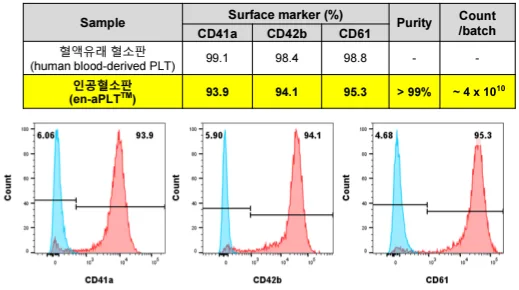
듀셀의 공정 혁신은 정량적으로 입증된 성과로 이어졌다. 3L 바이오리액터에서 리터당 2×10¹⁰개의 생산 수율을 달성했으며, 이는 경쟁사 대비 약 2.7배높은 수준이다. 공정 시간은 경쟁사 대비 약 2.9배 빠르며, 이는 연간 생산 회전율을 3배 높여 고정비 부담을 1/3로 줄이는 효과를 낳는다.
듀셀은 또한 GMP 수준의 생산 시설 인수를 통해 세계 최초로 50L 규모 인공혈소판 배양에 도전한다. 3L에서 50L로의 스케일업은 부피가 약 17배 증가하는 것으로, 일반적으로 이 과정에서 세포 밀도, 산소 전달 효율, 대사 부산물 축적 등의 문제가 발생한다. 그러나 범용 바이오리액터와 DoE 기반 공정최적화를 통해 이러한 문제를 최소화할 수 있을 것으로 전망된다.
4.2.2 Core Competency 관점의 이론적 해석
듀셀의 공정 기술은 Prahalad와 Hamel(1990)이 제시한 핵심역량(Core Competency)의 세 가지 조건을 모두 충족한다.
첫째, 고객 가치(Customer Value) 제공 조건이다. Prahalad와 Hamel은 핵심역량이 고객이 인지할 수 있는 편익(Customer-Perceived Benefit)을 제공해야한다고 강조했다. 듀셀의 9일 공정은 메가카리온의 26일 대비 2.9배 빠르며, 이는 연간 생산 회전율을 3배 높여 고정비 부담을 1/3로 낮춘다. 리터당 2×1010개의 생산 수율은 메가카리온 대비 2.7배 높아, 동일 배양 용량에서 더
많은 혈소판을 생산할 수 있다. 이는 최종 제품 가격을 40~50% 낮춰 병원·연구소·제약사 고객에게 경제적 혜택을 제공한다. 또한 Non-engineered 접근법은 안전성 우려를 원천 차단하여 의료기관에 규제적 안정성을 제공한다.
둘째, 경쟁사 차별화(Competitor Differentiation) 조건이다. Prahalad와 Hamel은 핵심역량이 다양한 기술과 생산 노하우를 조율·통합(Harmonization of Skills and Technologies)하는 능력이라고 정의했다. 듀셀의 공정 기술은 MKp-MCB, DoE 기반 최적화, 2-Step 정제가 유기적으로 결합된 통합 시스템이다. 개별 요소는 특허 문서나 논문으로 공개되어 있으나, 이들을 통합하여작동시키는 노하우는 조직 내에 암묵지(Tacit Knowledge)로 축적되어 있다. 예를 들어 MKp-MCB는 특허로 보호되지만, 어떤 세포주를 선별하고 (CD34+/CD41a+ 비율), 어떤 조건에서 냉동·해동하며(온도, 속도, 보호제), 어떤타이밍에 분화를 개시하는지(세포 밀도, 사이토카인 농도)는 수백 번의 시행착오를 거쳐 축적된 조직 학습의 결과다. DoE 최적화 역시 변수 조합의 수학적원리는 공개되어 있지만, 인공혈소판에 특화된 변수 선택과 최적 범위 설정은듀셀만의 경험적 데이터베이스에 기반한다. Prahalad와 Hamel이 강조한 기술을 조율·통합하는 능력이 바로 이것이다.
셋째, 확장 가능성(Extendability) 조건이다. Prahalad와 Hamel은 핵심역량이하나의 핵심 제품(Core Product)에서 다수의 최종 제품(End Product)으로 레버리지되어야 한다고 주장했다. 듀셀의 en-aPLT™ 플랫폼은 이 조건을 완벽히충족한다. 동일한 공정 기술(MKp-MCB + DoE + 2-Step 정제)로 생산된 인공혈소판이 세 가지 시장으로 확장된다.
- DCB-301 (바이오 소재): 성장인자 추출을 통한 연구용 HPL 시장 진입
- DCB-103 (치료제): 골관절염 치료제 개발 및 PRP 대체 표준화
- DCB-101 (수혈용): 수혈용 제품 상용화로 헌혈 의존도 해소
이는 Prahalad와 Hamel이 제시한 핵심역량 나무(Core Competence Tree) 모델의 전형적 사례다. 듀셀의 en-aPLT™는 뿌리(공정 기술), 줄기(플랫폼), 가지와 잎(3개 최종 제품)으로 성장하는 구조를 가진다. 경쟁사는 최종 제품(가지와 잎)을 모방할 수 있지만, 뿌리인 공정 기술을 모방하기는 매우 어렵다.
<그림13: 듀셀의 핵심역량 나무 도식(출처: 본인작성)>
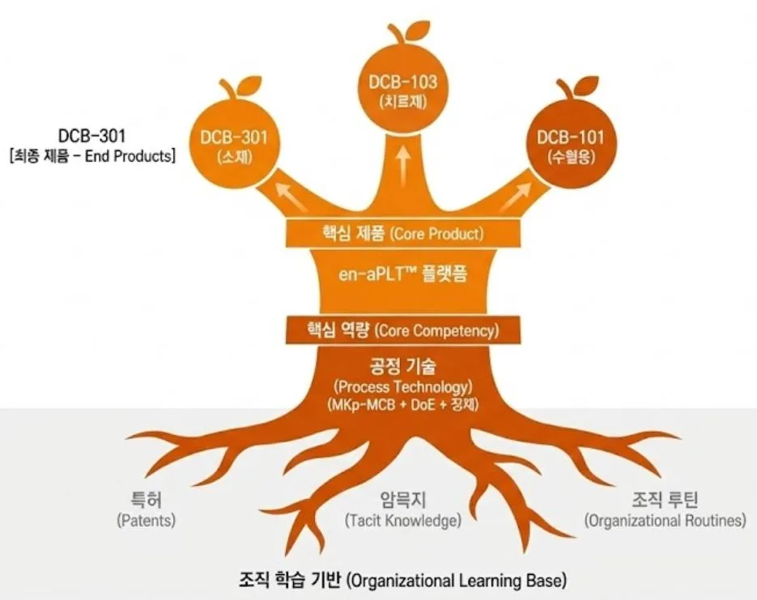
즉, 듀셀의 핵심역량은 제품이 아니라 과정(Process)에 있다는 점이 중요하다. Leonard-Barton(1992)은 핵심역량이 때로는 핵심경직성(Core Rigidity)으로전환될 위험을 경고했다. 그러나 듀셀의 공정 기술은 특정 장비나 원료에 고착되지 않고(범용 바이오리액터 사용), 다양한 최종 제품으로 확장 가능하므로 (3-Track), 경직성 함정을 회피한다. 이는 듀셀이 단순히 현재의 경쟁우위를 구축한 것이 아니라, 지속 가능한 경쟁우위(Sustainable Competitive Advantage) 를 확보했음을 의미한다.
4.3 Dynamic Capabilities: 플랫폼 레버리지 전략
4.3.1 듀셀의 3-Track 포트폴리오 전략
듀셀은 en-aPLT™ 플랫폼을 기반으로 3-Track 포트폴리오를 구축했다. 이는단기, 중기, 장기 수익원을 동시에 확보하여 바이오 스타트업의 전형적 문제인 Death Valley를 극복하는 전략이다.
- Track 1: DCB-301 (배지첨가물용, i-ahPLys™) - 조기 수익화 모델
DCB-301은 인공혈소판을 파쇄(Lysis)하여 내부의 성장인자(PDGF, VEGF, EGF, bFGF 등)를 추출한 용해물로, 세포치료제 연구에서 FBS나 기존 HPL을 대체하는 바이오 소재다. 듀셀은 DCB-301의 성장인자 함량이 기존 상용 HPL 대비높으며, 단 3% 농도만으로도 동등 이상의 세포 증식 촉진 효과를 보임을 입증했다. 특히 PDGF, bFGF, EGF 등 핵심 성장인자의 농도가 기존 제품 대비 5~10배 높아, 세포 배양 기간을 단축하고 배양 효율을 높일 수 있다.
DCB-301의 가장 큰 장점은 임상시험 없이 상용화가 가능하다는 점이다. 이는 연구용 시약(Research Use Only, RUO) 등급 제품이므로 식약처 허가가 필요 없으며, 제조 기준만 충족하면 즉시 판매할 수 있다. 따라서 듀셀은 2024 년부터 유럽의 혈소판 용해물 전문 기업과 협업을 진행 중이다.
- Track 2: DCB-103 (골관절염 치료제, i-aPLP™) - 중기 성장 동력
DCB-103은 표준화된 고농도 성장인자를 함유한 인공혈소판으로, PRP의 품질 불균일성 문제를 해결하고 일관된 치료 효과를 제공한다. 골관절염은 전세계적으로 5억 명 이상의 환자가 있는 거대 시장이지만, 현재 근본적 치료제는 없고 NSAIDs(비스테로이드성 소염진통제)로 증상만 완화하는 수준이다.
PRP 주사가 재생의료 치료법으로 시도되고 있으나, 환자별·제조법별 품질 편차(18~32%)가 심각한 한계로 지적된다.
듀셀은 골관절염 동물 모델(ACLT+DMM 모델)에서 DCB-103의 효능을 입증했다. 정상군, 대조군, 저농도 i-aPLP 투여군, 고농도 i-aPLP 투여군, 기존 HPL 투여군을 비교한 결과, 고농도 i-aPLP 투여군에서 Mankin Score(연골 손상 정도)가 8에서 4로 절반 수준으로 개선되었다. 조직학적 분석에서도 고농도 i- aPLP 투여군은 연골 구조가 거의 정상에 가깝게 회복되었으며, 이는 기존 HPL보다 우수한 결과다.
DCB-103은 2025년 4월 세계 최대 골관절염 학회인 OARSI(Osteoarthritis Research Society International)에서 발표 후 국제적 주목을 받았다. 듀셀의 발표는 인공혈소판 기반 골관절염 치료제가 PRP를 대체할 수 있는 차세대 DMOAD(Disease-Modifying Osteoarthritis Drugs) 후보임을 학계에 알리는 계기가 되었다. 골관절염 치료제는 첨단바이오의약품으로 분류되어 임상 2상 결과만으로도 조건부 허가를 받을 수 있으므로, 수혈용(DCB-101)보다 빠른 시장진입이 가능하다. 글로벌 골관절염 치료제 시장은 2030년 약 100억 달러로예상되며, DCB-103이 이 시장의 일부를 선점할 경우 듀셀의 중기 매출은 빠르게 성장할 것으로 전망된다.
- Track 3: DCB-101 (수혈용, en-aPLT™) - 장기 목표
DCB-101은 듀셀의 장기 목표 제품으로, 헌혈 유래 혈소판을 완전히 대체할수 있는 수혈용 인공혈소판이다. 글로벌 혈소판 시장은 연간 수조 원 규모이며, 만성적 공급 부족으로 인해 인공혈소판의 잠재 수요는 막대하다. 수혈용제품은 안전성 요구 수준이 가장 높고 임상시험 기간이 가장 길지만, 허가 후시장 규모는 가장 크다. DCB-101이 상용화될시 국내 시장 및 글로벌 시장에서의 빠른 매출 확장이 전망된다. 혈소판감소증 동물 모델(방사선 조사 또는화학요법 유도)에서 DCB-101의 지혈 효능 또한 검증됐다. 실험 결과, DCB- 101 투여군에서 출혈 시간(Bleeding Time)이 정상 수준으로 회복되었으며, 혈소판 수치도 유의미하게 증가했다. 이는 DCB-101이 생체 내에서 천연 혈소판과 동등한 지혈 기능을 수행할 수 있음을 시사한다.
이러한 듀셀의 3-Track 전략은 포트폴리오 이론(Portfolio Theory)의 실천이다. Markowitz(1952)의 현대 포트폴리오 이론은 여러 자산에 분산 투자하여 리스크를 낮추면서도 수익을 최적화할 수 있음을 보여주었다. 듀셀은 단일 제품에 집중하는 대신, 시장 진입 시기와 리스크 수준이 다른 세 제품에 R&D 자원을 배분하여, 하나의 제품이 지연되거나 실패하더라도 다른 제품으로 생존과 성장을 지속할 수 있는 구조를 만들었다.
4.3.2 Dynamic Capabilities 관점의 이론적 해석
듀셀의 3-Track 전략은 Teece 등(1997)의 Dynamic Capabilities(동적역량) 이론을 구현한다. Teece는 동적역량을 기업이 급변하는 환경에 대응하기 위해내외부 역량을 통합·구축·재구성하는 능력으로 정의하며, Sensing(기회 감지)- Seizing(기회 포획)-Transforming(조직 변환)의 3단계를 제시했다.
- Sensing: 3개 시장 기회의 동시 포착
Teece는 Sensing을 환경 변화를 지속적으로 탐색하고 기회와 위협을 식별
하는 능력으로 정의했다. 대부분의 기업은 하나의 시장에 집중하거나, 순차적
으로 시장을 확장한다. 그러나 듀셀은 창업 초기부터 세 가지 시장 기회를
동시에 포착했다.
첫째, 바이오 소재 시장의 기회다. 듀셀은 세포치료제 연구가 급증하면서
FBS를 대체할 윤리적이고 표준화된 소재 수요가 증가하고 있음을 감지했다.
HPL 시장은 2024년 5억 달러에서 2034년 19억 달러로 연평균 15.4% 성장이 예상되는 고성장 시장이며, 특히 임상시험 불필요로 가장 빠른 시장 진입
이 가능하다는 점을 파악했다.
둘째, 골관절염 치료제 시장의 기회다. 듀셀은 PRP 치료가 확산되고 있으
나 품질 불균일성(18~32% 편차)으로 치료 효과가 일관되지 않다는 임상적
한계를 감지했다. 골관절염 시장은 2030년 약 100억 달러로 예상되며, 표준
화된 품질의 인공혈소판이 PRP를 대체할 수 있는 신시장 기회를 식별했다.
셋째, 수혈용 시장의 기회다. 듀셀은 글로벌 혈소판 시장이 2028년 152억
달러로 성장하지만 헌혈 감소로 공급 부족이 심화되고 있음을 감지했다. 이
는 인공혈소판의 최대 시장이자 궁극적 목표임을 인식했다.
- Seizing: 정부 R&D 레버리지 활용
Teece는 Seizing을 "감지한 기회를 포착하기 위해 자원을 동원하고 투자
결정을 내리는 능력"으로 정의했다. 듀셀은 감지한 세 시장 기회를 실제 사
업화하기 위해 정부 R&D 자금을 전략적으로 확보했다.
<표2: 듀셀의 인공혈소판 사업 관련 정부과제(출처: 듀셀 자료 참고, 본인작성)>
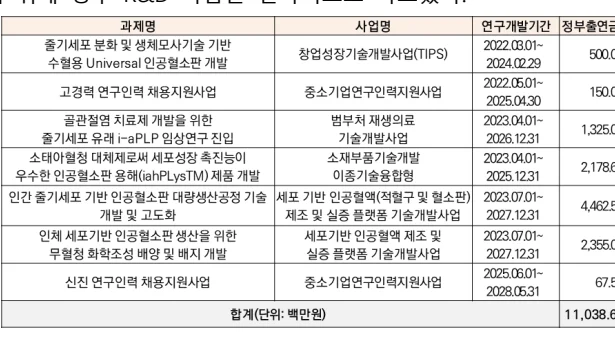
듀셀의 Seizing 능력의 핵심은 정부 R&D를 3-Track에 전략적으로 배분했다는 점이다. 대부분의 바이오 스타트업은 단일 과제에 집중하거나, 여러 과
제를 수주해도 유기적으로 연결하지 못한다. 그러나 듀셀은 각 정부 R&D 과
제가 서로 다른 Track(DCB-301/103/101)을 타겟하도록 설계하여, 정부 자금만으로도 전체 포트폴리오를 동시에 추진할 수 있는 구조를 만들었다. 이는
Teece가 강조한 자원 조율(Resource Orchestration)의 전형이다.
- Transforming: 실물옵션을 통한 포트폴리오 효과
Teece는 Transforming을 기회 포착을 위해 조직 구조와 프로세스를 재구성하는 능력으로 정의했다. 듀셀의 경우 Transforming은 3-Track이 상호 강화하며 포트폴리오 효과를 창출하는 메커니즘으로 구현되었다. 듀셀의 3-Track 전
략은 실물옵션(Real Options) 이론으로 설명된다. 각 Track이 서로에게 실물옵션 역할을 한다.
① 성장 옵션(Growth Option): DCB-301이 2026년 상용화 성공 시 그 매출로 DCB-103/101 투자를 확대할 수 있다.
② 대안 옵션(Abandonment Option): 한 Track이 실패해도 다른 Track으로 생존 가능하여 All-or-Nothing 리스크를 회피한다.
③ 학습 옵션(Learning Option): DCB-301의 시장 진입(2026년)을 통해 얻은인사이트를 DCB-103/101에 반영할 수 있다.
듀셀의 포트폴리오 전략은 Markowitz(1952)의 현대 포트폴리오 이론을 제품 전략에 적용한 사례다. 듀셀의 3-Track은 시장 진입 시기
(2026/2028/2033), 규제 장벽(없음/중간/높음), 시장 규모(작음/중간/큼)가 모두 다르므로 상관관계가 낮은 포트폴리오를 구성한다. 이는 투자자들에게 리
스크 완화 신호를 보내 듀셀의 연속 투자 유치로 이어졌다. 투자 업계 관계
자는 2023년 투자 당시, “듀셀의 3-Track 전략은 바이오 스타트업의 전형적리스크인 'All-or-Nothing'을 회피한 현명한 선택”이라고 평가했다.
4.4 Triple Helix: 인공혈액 생태계 구축
4.4.1 듀셀의 Rule Maker 전략
듀셀이 추진한 전략은 단순히 규제를 따르는 Rule Taker(규칙 수용자)가 아니라, 식약처와 함께 규제를 설계하는 Rule Maker(규칙 제정자)가 된 것이다. 이는 바이오·헬스케어 산업에서 극히 드문 사례로, 듀셀이 산업 생태계의 중심 (Hub)으로 자리매김하는 결정적 계기가 되었다.
- 정부(Government): 식약처와의 규제 공동 설계
듀셀의 가장 결정적인 전략적 성과는 2023년 7월 '세포기반 인공혈액 제
조 및 실증 플랫폼 개발사업'의 주관기관 선정이다. 이 사업은 과학기술정보
통신부, 보건복지부, 산업통상자원부, 식품의약품안전처가 공동으로 참여하는
다부처 사업으로, 2023~2029년까지 7년간 총 425억 원을 투입하는 대형 국책과제다. 듀셀은 이 사업의 총괄 책임기관이 되어 20여 개 기관을 아우르는
컨소시엄을 구성했다. 사업의 핵심은 단순한 R&D 자금 지원이 아니라, 식약
처와 함께 세포기반 인공혈액의 안전성·유효성 평가 기준을 공동으로 수립한
다는 점이다. 인공혈소판은 세계 최초 제품이므로 기존 가이드라인이 존재하
지 않았다. 식약처 입장에서도 안전성·유효성을 어떻게 평가해야 할지, 임상
시험은 어떻게 설계해야 할지에 대한 선례가 없었다. 듀셀은 식약처 담당자
들과 정기적으로 회의를 진행하며, 품질 기준 설정, 안전성 시험 설계, 임상
시험 설계, 제조 공정 관리 등에 대한 사항을 함께 논의했다.
이러한 협력의 결실로 2025년 8월 식약처는 세포기반 인공혈액을 첨단바
이오의약품으로 공식 분류한다고 발표했다. 첨단바이오의약품은 조건부 허가
제도를 활용할 수 있어, 임상 2상 결과만으로도 허가를 받을 수 있기에, 듀
셀이 가장 빠르고 명확한 상업화 패스트트랙을 확보했음을 의미한다.
- 대학·연구소(University & Research Institute): 기술 검증 네트워크
듀셀은 대학·연구소와의 협력을 통해 기술 검증(Technical Validation)과 학술적 정당성(Academic Legitimacy)을 확보했다. 이는 단순히 기술 이전을 받는 것을 넘어, 지식 공동 창출(Knowledge Co-creation)의 구조를 형성했다. 부산대학교와는 iPSC 원천기술 이전 및 초기 분화 프로토콜을 개발 협업했
다. 또한 국내 최고 수준의 바이오공정 연구 역량을 보유하고 있는 한국생명
공학연구원(KRIBB)와는 바이오리액터 스케일업(DoE 기반 공정 최적화)을 공
동 연구했다.
이러한 대학·연구소와의 협력은 단순한 기술 이전을 넘어, 지식 창출의 선
순환(Knowledge Co-creation Loop)을 형성했다. 듀셀이 개발한 공정 기술을대학·연구소에서 검증하고, 그 결과를 다시 듀셀이 공정 개선에 반영하는 피
드백 루프가 형성되었다.
- 산업(Industry): 글로벌 파트너십
듀셀은 글로벌 톱티어 기업들과 전략적 파트너십을 구축하여 생산·유통 역
량을 확보했다. 글로벌 바이오리액터 시장 점유율 1위 기업인 독일 Sartorius 사의 한국 지사인 Sartorius Korea와 협업을 진행중이며, 유럽 HPL 시장 점유율 1위 기업인 독일의 PL BioScience와도 200만 달러 규모의 사업 제휴를 체결했다. PL BioScience는 유럽 바이오 소재 시장에서 20년 경력을 보유하고있으며, 제약·바이오 기업, 대학 연구소 등 광범위한 고객 네트워크를 갖추고
있다.
듀셀의 산업 파트너십 전략은 수직 통합(Vertical Integration)이 아닌 수평협력(Horizontal Collaboration)을 지향한다. 바이오 산업에서 많은 기업들이원료 공급부터 생산, 유통까지 수직 통합을 시도하지만, 이는 막대한 자본과
시간을 요구한다. 듀셀은 자사 핵심 역량(공정 기술)에 집중하고, 나머지 영
역은 글로벌 최고 수준의 파트너와 협력하는 전략을 택했다. 이는 자본 효율
성을 극대화하는 동시에, 글로벌 표준 기술과 인프라를 활용하여 품질 경쟁
력을 확보하는 전략이다.
- 병원(Hospital): 임상 네트워크
듀셀은 국내 최고 수준의 병원들과 임상 네트워크를 구축하여 임상시험
인프라를 확보하기도 했다. 삼성서울병원과는 혈액내과 및 정형외과와 협력
하여 DCB-101과 DCB-103의 임상시험을 준비 중이다. 삼성서울병원은 국내최대 규모의 3차 의료기관으로, 연간 혈소판 수혈 건수와 골관절염 환자 풀
이 방대하여 임상시험 수행에 최적의 조건을 갖추고 있다.
이러한 병원 네트워크는 단순히 임상시험 장소를 확보하는 것을 넘어, 임
상 데이터의 신뢰성을 높인다. 이들에서 수행된 임상시험 결과는 식약처 및
FDA 심사에서 높은 신뢰도를 얻을 수 있다. 또한 임상 경험이 풍부한 병원
과의 협력은 임상시험 설계의 과학적 타당성을 높이고, 피험자 모집과 데이
터 수집의 효율성을 향상시킨다.
<표3: 듀셀의 인공혈소판 파트너십 사항(출처: 듀셀 자료 참고, 본인작성)>
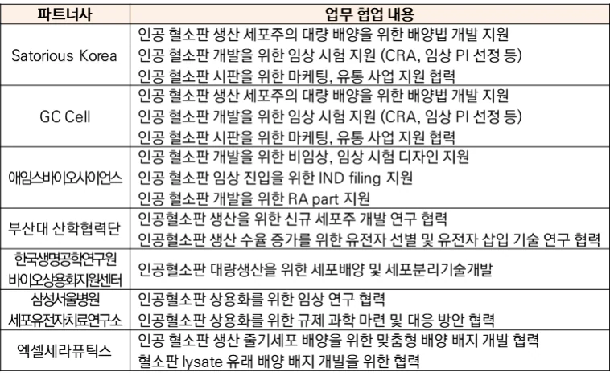
4.4.2 Triple Helix 관점의 이론적 해석
듀셀의 사례는 Etzkowitz와 Leydesdorff(1995, 2000)의 Triple Helix(삼중나선혁신 모델) 이론을 구현하고 있다. Triple Helix 이론은 혁신이 대학(지식 창출), 산업(제품 생산), 정부(규제·지원)라는 세 주체의 상호작용과 협력을 통해 창출된다고 주장한다. Etzkowitz(2008)는 Triple Helix의 진화 단계를 세 가지로 구분했다. Triple Helix I은 정부 주도형(Statist)으로, 정부가 대학과 산업을 모두통제하는 모델이다. Triple Helix II는 자유방임형(Laissez-faire)으로, 세 주체가완전히 독립적으로 작동하며 시장 메커니즘에만 의존하는 모델이다. Triple Helix III은 균형형(Balanced)으로, 세 주체가 상호 독립성을 유지하면서도 전략적으로 협력하며, 이들의 교차 지점에서 혁신이 발생하는 모델이다. 듀셀의 사례는 Triple Helix III에 해당하며, 특히 기업이 중심(Hub) 역할을 수행하는 산업주도형 Triple Helix를 구현했다.
- 정부와의 협력: Rule Maker로의 전환
듀셀의 핵심 전략은 단순히 Rule Taker(규칙 수용자)가 아니라 Rule
Maker(규칙 제정자)가 된 것이다. DiMaggio(1988)는 제도적 기업가정신 (Institutional Entrepreneurship)을 "기존 제도를 변화시키거나 새로운 제도를
창출하여 자신에게 유리한 환경을 조성하는 행위"로 정의했다. 듀셀은 단순
히 기존 규제를 따르는 대신, 식약처와 함께 새로운 규제 제도(세포기반 인
공혈액 평가 기준)를 창출했다. 이는 듀셀이 제도적 기업가로서 산업 구조
자체를 자신에게 유리하게 설계했음을 의미한다.
North(1990)의 제도 경제학(Institutional Economics) 관점에서 볼 때, 듀셀의 전략은 매우 전략적이다. North는 제도(Institutions)가 경제 주체의 행동을제약하는 "게임의 규칙(Rules of the Game)"이라고 정의했다. 대부분의 기업은 주어진 규칙 내에서 경쟁하지만, 듀셀은 규칙 자체를 설계하는 참여자
(Rule Designer)가 되었다. 식약처와 함께 세포기반 인공혈액의 평가 기준을수립한 것은, 사실상 듀셀의 기술을 기준으로 게임의 규칙을 만든 것과 같다.
이는 후발 경쟁자들이 듀셀이 만든 규칙에 맞춰야 한다는 것을 의미하며, 규
제 선점 효과(Regulatory First-Mover Advantage)를 창출했다. 2025년 8월 식약처의 세포기반 인공혈액 첨단바이오의약품 분류는 듀셀에
게 세 가지 구조적 우위를 제공했다. 첫째, 조건부 허가 경로 확보다. DCB-
103은 임상 2상 결과만으로도 조건부 허가를 받을 수 있어, 임상 3상을 건너
뛰고 빠르게 시장에 진입할 수 있다. 둘째, 맞춤형 심사 트랙이다. 식약처는
인공혈액 전담 심사팀을 구성하여 듀셀의 IND 신청을 우선 검토하기로 했다.
셋째, 후발 경쟁자에 대한 진입 장벽이다. 듀셀과 식약처가 함께 만든 평가
기준은 사실상 업계 표준이 되므로, 후발 기업들은 이 기준을 충족해야 한다.
- 대학·연구소와의 협력: 지식 공진화(Knowledge Co-evolution)
Etzkowitz는 Triple Helix에서 대학의 역할이 단순한 지식 생산(Knowledge Production)을 넘어 지식 활용(Knowledge Utilization)과 사회적 가치 창출 (Social Value Creation)로 확장된다고 했다. 전통적 모델에서는 대학이 기초연구를 수행하고 기업이 이를 상용화하는 일방향(One-way) 구조였다. 그러나
Triple Helix III에서는 양방향(Two-way) 피드백 구조를 형성한다. 듀셀과 부산대·한국생명공학연구원(KRIBB)의 협력은 이러한 지식 공진화 (Co-evolution) 구조를 보여준다. 대학은 기술을 이전하고, 기업은 상용화 데이터를 대학에 환류하며, 이를 기반으로 대학은 다시 연구를 고도화하는 선순환이 형성되었다. 이러한 지식 공진화는 Gibbons et al.(1994)이 제시한 Mode 2 지식 생산(Mode 2 Knowledge Production) 개념과도 일치한다. Mode 1은 대학 중심의 기초 연구(학문적 우수성 추구)이고, Mode 2는 문제해결 중심의 응용 연구(사회적 가치 추구)다. 듀셀과 대학의 협력은 Mode 2 의 전형으로, 스케일업 문제 해결이라는 명확한 산업적 목표를 중심으로 대학의 기초 연구 역량과 기업의 상용화 역량이 결합되었다.
- 산업 파트너십: 글로벌 표준 활용
듀셀의 산업 파트너십 전략은 Make vs Buy vs Ally 의사결정에서 Ally(제휴) 를 선택한 것이다. 경쟁사는 특수 배양기를 직접 개발(Make)했으나 실패했다. 듀셀은 범용 바이오리액터를 활용(Ally)하여 스케일업에 성공했다. 이는 Teece(1986)의 Profiting from Innovation 이론과 연결된다. Teece는 혁신 기업이 수익을 창출하기 위해서는 보완 자산(Complementary Assets)이 필요하며, 이를 내부화할지 외부 파트너와 협력할지 결정해야 한다고 주장했다.
듀셀의 경우 바이오리액터는 일반적 보완 자산(Generic Complementary Asset)으로, 내부화할 필요가 없다고 판단했다. 반면 공정 최적화 노하우는전문적 보완 자산(Specialized Complementary Asset)으로, 내부화해야 한다고판단했다. 이러한 전략적 판단은 자본 효율성을 극대화했다. 듀셀은 바이오리액터 개발에 수백억 원을 투자하는 대신, Sartorius 장비를 임대·구매하여 즉시 사용했고, 절약된 자본을 DoE 최적화와 임상시험에 투입했다.
글로벌 기업과의 유통 제휴도 동일한 논리다. 듀셀은 유럽 시장에 직접 진출하기 위해 현지 법인 설립, 유통망 구축, 고객 확보에 막대한 투자를 할 수도 있었다. 그러나 유통 전문 기업과의 제휴를 통해, 초기 투자 없이 즉시 유럽 시장에 진입을 추진 중이다. 이는 Williamson(1985)의 거래비용 경제학 (Transaction Cost Economics) 관점에서 볼 때, 시장(Market) 메커니즘을 활용한 효율적 선택이었다.
Powell et al.(1996)은 바이오 산업을 분석하며 네트워크가 혁신의 핵심 원천 (Network as Locus of Innovation)이라고 주장한 바 있다. Powell 등은 바이오산업에서 네트워크가 풍부한 기업일수록 혁신 성과가 높으며, 특히 중심성 (Centrality)이 높은 기업일수록 정보 접근성과 자원 동원 능력이 우수하다고밝혔다. 듀셀의 경우 인공혈액 생태계에서 최고 수준의 중심성을 확보했다.
듀셀의 Triple Helix 전략은 단순히 네트워크를 구축한 것을 넘어, 생태계의설계자(Ecosystem Architect)가 되었다는 점에서 의미가 크다. 듀셀은 식약처 (규제), 대학(기술), 병원(임상), 산업(생산·유통)이라는 상호 의존적 행위자들을인공혈액 상용화라는 공통 목표로 정렬시켰다. 이는 각 행위자가 독립적으로추구하면 달성하기 어려운 목표지만, 듀셀이 허브가 되어 조율함으로써 달성가능해졌다.
제5장. 결론 및 시사점
본 연구는 인공혈소판 산업에서 후발주자로 진입한 ㈜듀셀이 어떻게 선발주자를 추월하고 산업 내 선도적 위치를 형성할 수 있었는지를 규명하기 위해수행되었다. Core Competency, Dynamic Capabilities, Triple Helix 세 가지 이론적 렌즈를 주축으로 통합 적용하여 듀셀의 혁신 전략을 분석한 결과, 듀셀의성공은 단순한 모방을 넘어선 탈추격(Post Catch-up)의 과정이었으며, 이는 기술적 우위(공정 혁신), 전략적 유연성(포트폴리오 다각화), 구조적 우위(생태계주도) 전략이 상호 강화하며 시너지를 창출한 결과임을 확인했다.
사례연구 목적인 Research Question 1번에 대한 결론은 듀셀이 후발주자의열세를 독자적 기술 경로(Path Creation)로, Bio Tech의 재무 리스크를 유연한사업 파이프라인으로, 신시장의 규제 공백을 생태계 주도 전략으로 해결하는 3차원 입체 혁신 전략을 통해 4년 만에 시장 주요 플레이어로 부상했다는 것이다.
기술 차원에서 듀셀은 MKp-MCB 전략(26일→9일 공정 단축), Non- engineered 접근법(안전성 선제 확보), DoE 기반 최적화(2.7배 수율)를 통해 Prahalad & Hamel의 핵심역량 3조건을 충족하여 경쟁사가 다년간 해결하지못한 스케일업 문제를 4년 만에 돌파했다. 경쟁사가 다년간 해결하지 못한 스케일업(Scale-up) 문제를 4년 만에 돌파하는 기술적 탈추격을 달성했다.
사업 차원에서는 단일 플랫폼 기술을 시장 진입 시기와 규제 장벽이 다른 3 개 시장(바이오 소재 2026년·골관절염 치료제 2028년·수혈용 2033년)으로 다각화하여 Teece의 Sensing-Seizing-Transforming 프레임워크를 구현했으며, 특히 DCB-301의 조기 수익화는 Death Valley를 극복하는 핵심 동력이 되었다. 생태계 차원에서는 식약처와 규제를 공동 설계하여 Rule Taker에서 Rule Maker로 전환했으며, 인공혈액사업단 주관기관으로 20여 개 기관 컨소시엄의허브가 되어 네트워크 중심성을 극대화했다. 이러한 3차원 전략은 경쟁사 대비 1/3의 자본으로 동등 이상의 성과를 달성하는 자본 효율성을 창출했다.
사례연구 목적인 Research Question 2번에 대한 결론은 듀셀의 성장 메커니즘이 Late-mover Disadvantage를 Late-mover Advantage로 전환하는 '탈추격 (Post Catch-up) 혁신 공식'을 제시한다는 것이다. 듀셀은 선발주자의 실패(특수 장비 의존→스케일업 실패, 단일 제품→Death Valley)를 체계적으로 학습하되, 이를 답습하지 않고 범용 장비 기반의 공정 내재화와 3-Track 포트폴리오라는 새로운 경로를 창출했다.
산업 후발주자 스타트업들은 듀셀의 사례로부터 세 가지 전략적 교훈을 얻을 수 있다.
첫째, 기술 모방(Path-following)이 아닌 경로 창출(Path Creation)에 집중해야 한다. 선발주자의 기술 경로를 따라가는 대신, 산업의 핵심 병목(스케일업, 원가, 규제)을 해결하는 독자적 대안 경로를 탐색하여 기술적 초격차를 확보해야 한다.
둘째, 단일 제품이 아닌 플랫폼 사고로 포트폴리오를 설계해야 한다. 핵심기술의 부산물이나 중간 산출물도 제품화하여 최종 목표 달성 전에도 현금흐름이 발생하는 구조를 만들어야 한다. 특히 조기 수익화 가능한 Track(임상 불필요)을 반드시 포함하여 Death Valley를 극복해야 한다.
셋째, 생태계 내에서 제도적 기업가(Institutional Entrepreneur)로서 Rule Maker 지위를 확보해야 한다. 정부 R&D 과제 주관기관 참여를 통해 규제 기관과 직접 협의하고, 산·학·연·병·정 네트워크의 허브가 되어 산업 구조 자체를자신에게 유리하게 설계해야 한다.
따라서 듀셀의 성장 공식은 산업의 핵심 병목 돌파 × 시장 다각화 × 생태계 규칙 제정자 지위 선점의 조합이며, 이는 후발주자가 선발주자를 추월하기위해서는 단순한 속도(Speed)보다 방향(Direction)의 재설정이 중요함을 시사한다.
듀셀 사례를 통해 바이오·딥테크 분야 후발주자 기업일수록 창업 시점부터선발주자의 실패 원인을 체계적으로 분석하고 대안 경로를 탐색하는 것이 선행되어야 하며, 단일 제품 의존이 아닌 플랫폼 확장 가능성을 초기부터 설계하는 것이 중요한 전략임을 알 수 있었다. 또한 규제 집약적 산업 특성상 창업 초기 스타트업은 정부 R&D 컨소시엄 주관기관 지위 확보를 통해 Rule Maker로 전환하는 것이 유용한데, 정부·식약처·대학·병원을 아우르는 생태계의허브가 되어 네트워크 중심성을 극대화하는 것이 유리한 전략임을 확인하였다. 시장에 진입한 이후로는 독보적인 시장경쟁력 확보를 위해 공정 최적화와포트폴리오 다각화 전략이 매우 중요하다는 점, 그리고 이를 뒷받침하는 기술역량과 생태계 주도 능력을 끊임없이 개발해 나가는 것이 매우 중요함을 확인할 수 있었다.
즉, 본 사례를 통해 바이오·딥테크 분야에 종사하는 후발주자 스타트업이 성공적으로 시장에 진입하기 위해서는 선발주자 실패 학습을 바탕으로 대안 경로를 창출하고, 기술혁신과 사업혁신 그리고 생태계 혁신 셋 중 하나에만 집중하는 것이 아닌 삼위일체 전략으로 동시에 추진해야 된다는 시사점을 얻을수 있었다.
그러나 향후 종단적 추적 연구를 통해 듀셀의 상업화 과정을 관찰하고 전략의 효과성을 사후 검증할 필요가 있다. 또한 본 연구 단일 사례 연구이므로다중 사례 연구를 통해 듀셀의 전략이 다른 바이오 스타트업(유전자 치료, mRNA 백신 등)이나 다른 국가에서도 유효한지 검증할 필요가 있으며, 후발주자 추월 이후 선도적 위치를 유지하는 방어 전략에 대한 논의가 추가적으로필요할 것으로 사료된다.
Reference
논문 [1] C.K. Prahalad, G. Hamel. (1990). The Core Competence of the Corporation. Harvard Business Review.
[2] D.J. Teece, G. Pisano, A. Shuen. (1997). Dynamic capabilities and strategic management. Strategic Management Journal.
[3] D.J. Teece. (2007). Explicating dynamic capabilities: the nature and microfoundations of (sustainable) enterprise performance. Strategic Management Journal.
[4] H. Etzkowitz, L. Leydesdorff. (2000). The dynamics of innovation: from National Systems and “Mode 2” to a Triple Helix of university–industry–government relations. Research Policy.
[5] D. Leonard-Barton. (1992). Core capabilities and core rigidities: A paradox in managing new product development. Strategic Management Journal. [6] H.M. Markowitz. (1952). Portfolio Selection. The Journal of Finance. [7] W.W. Powell, K.W. Koput, L. Smith-Doerr. (1996). Interorganizational collaboration and the locus of innovation: Networks of learning in biotechnology. Administrative Science Quarterly.
[8] D.J. Teece. (1986). Profiting from technological innovation: Implications for integration, collaboration, licensing and public policy. Research Policy. 보고서 [1] WHO. (2023). Global Status Report on Blood Safety and Availability. [2] 대한적십자사. (2024). 2023 혈액사업통계연보.
[3] 보건복지부. (2024). 2024년 혈액수급 위기대응 매뉴얼.
[4] 듀셀. (2025). IR자료.
서적 [1] R.K. Yin. (2014). Case Study Research: Design and Methods. Sage Publications. [2] D.C. North. (1990). Institutions, Institutional Change and Economic Performance. Cambridge University Press.
[3] O.E. Williamson. (1985). The Economic Institutions of Capitalism. Free Press. [4] H. Etzkowitz. (2008). The Triple Helix: University-Industry-Government Innovation in Action. Routledge.
[5] M. Gibbons, et al. (1994). The new production of knowledge: The dynamics of science and research in contemporary societies. Sage. 웹페이지 및 언론보도 [1] 더바이오. (2023.07.15). 듀셀, 세포기반 인공혈액사업단 주관기관선정..."총 425억원 규모". http://www.thebio.co.kr [2] 약업신문. (2025.05.20). 듀셀, 독일 PL BioScience와 200만 달러 규모인공혈소판 용해물 공급 계약. http://www.yakup.com [3] 바이오스펙테이터. (2025.08.10). 식약처, 세포기반 인공혈액첨단바이오의약품 분류...듀셀 상용화 탄력. http://www.biospectator.com [4] 매일경제. (2024.07.10). 듀셀, 시리즈B 125억원 투자유치성공...한국산업은행 등 참여. http://www.mk.co.kr [5] 한국경제. (2025.11.05). 듀셀, 세계 최초 50L 인공혈소판 배양도전..."2026년 상용화 목표". http://www.hankyung.com [6] Nature Biotechnology. (2019). Megakaryon's iPSC-derived platelets enter first-in- human trial. https://www.nature.com/nbt [7] BioCentury. (2022). Megakaryon pivots manufacturing strategy after scale-up challenges. https://www.biocentury.com [8] 듀셀 공식 홈페이지. https://www.dewcell.com [9] 식품의약품안전처. (2025). 첨단바이오의약품 품목허가·심사 가이드라인. https://www.mfds.go.kr [10] 과학기술정보통신부. (2023). 세포기반 인공혈액 제조 및 실증 플랫폼개발사업 선정 공고. https://www.msit.go.kr [11] OARSI (Osteoarthritis Research Society International). (2025). Annual Meeting Abstract Book 2025. https://www.oarsi.org [12] FDA. (2023). Guidance for Industry: Potency Tests for Cellular and Gene Therapy Products. https://www.fda.gov